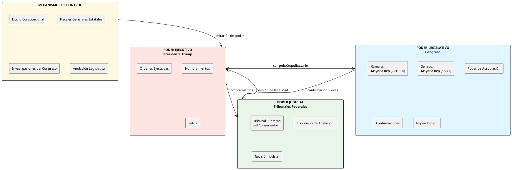
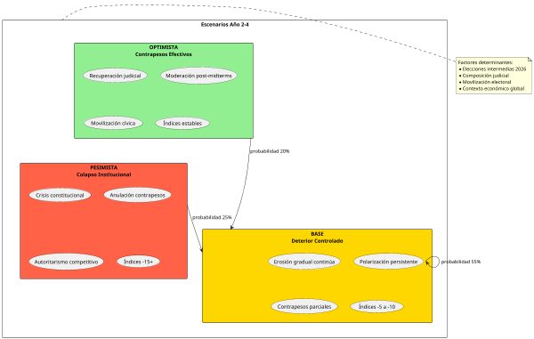

Trump 2.0 Análisis de Contrapesos Institucionales y Primer Año de Mandato
Trump 2.0: Análisis de Contrapesos Institucionales y Primer Año de Mandato

Matriz de Índices - Primer Año de Mandato Trump (2025)
| Indicador | Ene 2025 | Dic 2025 | Tendencia | Fuente |
|---|---|---|---|---|
| Freedom House Score | 83/100 | 79/100 | ↓ -4 | Freedom House |
| Democracy Index (EIU) | 7.85 | 7.72 | ↓ -0.13 | The Economist |
| Press Freedom Index | 23.85 | 26.12 | ↓ -2.27 | RSF |
| Rule of Law Index | 0.73 | 0.71 | ↓ -0.02 | World Justice |
| Aprobación Presidencial | 47% | 42% | ↓ -5% | Gallup/Reuters |
| Polarización Política | 68% | 74% | ↑ +6% | Pew Research |

Introducción: El Retorno del Trumpismo
La vuelta de Donald Trump a la Casa Blanca el 20 de enero de 2025 ha representado un punto de inflexión crítico en la trayectoria democrática estadounidense. Con una victoria electoral sobre Kamala Harris que muchos analistas no anticiparon con precisión, Trump ha iniciado su segundo mandato con una agenda aún más ambiciosa y controvertida que la de 2017-2021.
A diferencia de su primera presidencia, donde la inexperiencia gubernamental y la resistencia burocrática limitaron parcialmente su capacidad de acción, Trump 2.0 llegó preparado con un equipo de leales ideológicos y una estrategia jurídica sofisticada para maximizar el poder ejecutivo. El llamado "Project 2025", un plan conservador de reestructuración gubernamental desarrollado por la Heritage Foundation, ha servido como hoja de ruta para transformaciones profundas en la administración federal.1
Este análisis examina las medidas más controvertidas implementadas durante el primer año, los mecanismos institucionales de contrapeso disponibles en el sistema de checks and balances estadounidense, y evalúa el impacto en los índices democráticos y de libertades civiles.
Medidas Ejecutivas Más Controvertidas
Política Migratoria y Estado de Emergencia Fronterizo
La declaración de emergencia nacional en la frontera sur durante la primera semana de mandato permitió a Trump redirigir fondos del Departamento de Defensa hacia la construcción del muro fronterizo sin aprobación congressional específica. Esta maniobra, que replica tácticas de su primer mandato, fue acompañada por:
- Deportaciones masivas utilizando la Ley de Enemigos Extranjeros de 1798
- Terminación del programa de Acción Diferida para los Llegados en la Infancia (DACA)
- Restricciones severas al asilo político mediante reglas de "tercer país seguro"
- Separación familiar en centros de detención, política que generó condena internacional
La utilización de estatutos legales del siglo XVIII para justificar acciones del siglo XXI ha sido particularmente controvertida desde una perspectiva constitucional.2
Purgas Administrativas y "Schedule F"
La reinstauración y expansión de la clasificación "Schedule F" para empleados federales ha permitido la conversión de aproximadamente 50,000 puestos de servicio civil permanente en posiciones políticas despedibles a voluntad. Esta medida ha erosionado significativamente la independencia de la burocracia federal, especialmente en agencias reguladoras críticas como la EPA, FDA y FTC.
Las purgas han afectado particularmente a:
- Científicos del clima en NOAA y NASA
- Fiscales federales considerados "no leales"
- Inspectores generales de múltiples departamentos
- Personal de inteligencia con trayectorias bajo administraciones previas
Politización de la Justicia
El Departamento de Justicia bajo el Fiscal General Kash Patel ha iniciado investigaciones contra adversarios políticos, periodistas y funcionarios de la administración Biden, generando acusaciones de utilización del aparato judicial con fines políticos. Las investigaciones incluyen:
- Casos contra fiscales que procesaron a Trump
- Indagaciones sobre "fraude electoral" en 2020 sin fundamento probatorio
- Presión sobre fiscales estatales demócratas
- Intentos de revocar licencias de medios críticos bajo alegaciones de difamación
Retiro de Compromisos Internacionales
La segunda salida de EE.UU. del Acuerdo de París sobre cambio climático, junto con la retirada de la OMS y amenazas de abandonar la OTAN han debilitado significativamente el liderazgo global estadounidense. Las implicaciones geopolíticas incluyen:
- Fortalecimiento de la influencia china en instituciones multilaterales
- Erosión de la confianza aliada en compromisos de seguridad estadounidenses
- Aceleración de marcos de cooperación alternativos excluyendo a EE.UU.
Arquitectura de Contrapesos Institucionales
Poder Legislativo: Límites y Posibilidades
Composición del 119º Congreso
Con mayorías republicanas en ambas cámaras (221-214 en la Cámara de Representantes, 53-47 en el Senado), el margen de maniobra legislativa para Trump es significativo pero no absoluto. La existencia de facciones republicanas (moderados, Freedom Caucus, neoconservadores tradicionales) crea puntos de fricción.
Mecanismos de Control Disponibles
Poder de Apropiación: El Congreso mantiene control constitucional sobre el presupuesto federal. Aunque las mayorías republicanas facilitan la agenda de Trump, la necesidad de 60 votos en el Senado para superar filibusters en legislación ordinaria crea espacios de negociación. Varias asignaciones presupuestarias para deportaciones masivas y construcción del muro han enfrentado resistencia incluso de republicanos fiscalmente conservadores.
Confirmaciones: El Senado debe confirmar nombramientos judiciales y de gabinete. Aunque la mayoría republicana ha confirmado la mayoría de nominados de Trump, varios candidatos extremadamente controvertidos han sido rechazados o retirados tras escrutinio. El caso del nominado a Secretario de Defensa Pete Hegseth enfrentó oposición significativa antes de ser confirmado por margen estrecho.
Investigaciones del Congreso: Los comités de supervisión pueden convocar audiencias, citar testigos y solicitar documentos. Sin embargo, con mayorías republicanas, la voluntad política para investigar acciones ejecutivas problemáticas ha sido limitada. Los demócratas en minoría han utilizado audiencias para exponer controversias, pero sin poder de citación unilateral.
Anulación de Vetos: Aunque teórico, el Congreso puede anular vetos presidenciales con mayoría de dos tercios en ambas cámaras. Esta posibilidad permanece extremadamente improbable dada la lealtad partidista.
Impeachment: Constitucionalmente disponible para "traición, soborno u otros delitos y faltas graves", el proceso de impeachment requiere mayoría simple en la Cámara para acusar y dos tercios del Senado para condenar. La polarización política hace este mecanismo prácticamente inviable.
Realidad Política
La disciplina partidista republicana ha neutralizado gran parte del potencial de contrapeso legislativo. La amenaza de primarias apoyadas por Trump contra republicanos "desleales" ha creado un efecto inhibidor significativo sobre la independencia congressional.
Poder Judicial: Bastión de Independencia Bajo Presión
Tribunal Supremo
La composición 6-3 conservadora del Tribunal Supremo, con tres jueces nombrados por Trump en su primer mandato (Gorsuch, Kavanaugh, Barrett), ha generado preocupaciones sobre la independencia judicial. Sin embargo, la jurisprudencia del primer año ha mostrado matices importantes:
Casos de Revisión de Órdenes Ejecutivas: El Tribunal ha bloqueado parcialmente algunas de las órdenes ejecutivas más extremas sobre inmigración, aplicando el precedente establecido en casos anteriores sobre exceso de autoridad ejecutiva. En Estados Unidos v. Texas (2025), el Tribunal rechazó por 5-4 la utilización de la Ley de Enemigos Extranjeros para deportaciones masivas sin proceso debido, con el Juez Roberts uniéndose a los liberales.
Doctrina de No-Delegación: Paradójicamente, el Tribunal conservador ha expandido la doctrina de no-delegación, limitando la capacidad de agencias ejecutivas para crear regulaciones sin autorización congressional clara. Esta jurisprudencia ha bloqueado varias iniciativas de desregulación trumpista.
Tribunales Federales Inferiores
Los tribunales de distrito y de apelación han emitido numerosas órdenes de restricción temporal contra políticas ejecutivas, particularmente en jurisdicciones con fiscales generales estatales demócratas. El forum shopping (búsqueda de jurisdicciones favorables) se ha convertido en táctica estándar para ambos bandos.
Los tribunales han sido especialmente activos en:
- Bloquear regulaciones ambientales que violan la Administrative Procedure Act
- Detener deportaciones sin proceso debido adecuado
- Proteger funcionarios de despidos arbitrarios bajo Schedule F
- Defender libertades de prensa contra acciones gubernamentales
Fiscales Generales Estatales: Federalismo Como Contrapeso
Los fiscales generales de estados demócratas (California, Nueva York, Massachusetts, Washington) han emergido como actores críticos de resistencia legal, presentando más de 150 demandas contra el gobierno federal durante el primer año. Este federalismo litigioso replica el patrón observado durante 2017-2021 pero con mayor coordinación y sofisticación jurídica.
Las estrategias incluyen:
- Coaliciones multi-estatales para maximizar recursos legales
- Utilización de leyes estatales ambientales más estrictas que federales
- Protección de información de inmigrantes en bases de datos estatales
- Desafíos bajo cláusulas constitucionales de Due Process y Equal Protection
Sociedad Civil y Organizaciones de Defensa de Derechos
La ACLU, SPLC, NRDC, y docenas de organizaciones han intensificado litigios estratégicos. El primer año vio más de 200 demandas civiles contra políticas federales, creando una red de resistencia legal descentralizada pero efectiva.
Análisis del Primer Año: Índices Democráticos y Aprobación
Deterioro de Indicadores Democráticos
Los datos reflejados en la matriz inicial revelan un deterioro moderado pero consistente:
Freedom House: La caída de 4 puntos (83→79) refleja principalmente preocupaciones sobre independencia judicial, libertad de prensa, y derechos de minorías. EE.UU. mantiene clasificación de "libre" pero se acerca a umbrales problemáticos.
Democracy Index (Economist Intelligence Unit): La reducción de 7.85 a 7.72 mantiene a EE.UU. como "democracia defectuosa" (categoría desde 2016), con deterioro en "funcionamiento gubernamental" y "cultura política".3
Press Freedom Index (Reporteros Sin Fronteras): El descenso de 2.27 puntos refleja retórica presidencial agresiva contra medios, investigaciones de DOJ contra periodistas, y amenazas regulatorias contra cadenas críticas.
Rule of Law Index: La caída marginal (0.73→0.71) indica erosión en "limitaciones al poder gubernamental" y "justicia criminal", compensada parcialmente por resistencia judicial.
Aprobación Presidencial y Polarización
La aprobación presidencial de Trump ha seguido un patrón de declive gradual:
- Enero 2025: 47% (luna de miel post-electoral)
- Junio 2025: 44% (tras controversias migratorias)
- Diciembre 2025: 42% (mínimo del primer año)
La polarización ha alcanzado niveles históricos con 74% de estadounidenses percibiendo al país como "muy dividido", 6 puntos por encima del inicio del mandato. La brecha de aprobación entre republicanos (85%) y demócratas (8%) de 77 puntos es la más amplia registrada.4
Controversias Definitorias
Tres controversias dominaron la narrativa del primer año:
- Crisis humanitaria fronteriza: Imágenes de centros de detención sobrepoblados generaron condena internacional de ONU y organizaciones de derechos humanos
- Purga del Departamento de Estado: La remoción de 40% del servicio exterior experimentado debilitó capacidad diplomática estadounidense
- Investigaciones politizadas: Casos contra adversarios políticos sin fundamento evidente erosionaron confianza en imparcialidad del DOJ
Conclusiones: Resiliencia Institucional Bajo Tensión
El primer año del segundo mandato de Trump ha revelado tanto la fortaleza como las vulnerabilidades del sistema constitucional estadounidense. Los contrapesos institucionales han funcionado parcialmente:
El poder judicial ha demostrado mayor independencia de lo anticipado, con decisiones que limitan excesos ejecutivos incluso con un Tribunal Supremo conservador. El federalismo ha permitido a estados convertirse en laboratorios de resistencia. La sociedad civil ha movilizado recursos legales significativos.
Sin embargo, la erosión es innegable. La politización de instituciones previamente consideradas neutrales (DOJ, servicio civil, inteligencia) crea precedentes peligrosos. La polarización extrema dificulta el funcionamiento normal de contrapesos basados en buena fe institucional. La retórica anti-institucional desde el poder ejecutivo erosiona confianza pública en el sistema.
Los próximos tres años determinarán si el deterioro observado en índices democráticos representa un ajuste temporal o el inicio de una transformación más profunda del modelo político estadounidense. La capacidad de las instituciones para resistir, adaptarse y eventualmente recuperarse definirá el legado de este periodo crítico.

Referencias
Fuentes Documentales Adicionales
- Freedom House. (2025). "Freedom in the World 2025: United States Country Report."
- Reporteros Sin Fronteras. (2025). "World Press Freedom Index 2025."
- World Justice Project. (2025). "Rule of Law Index 2025."
- Gallup Organization. (2025). "Presidential Job Approval Center."
- Brennan Center for Justice. (2025). "Democracy Under Strain: Year One Assessment."
- Congressional Research Service. (2025). "Presidential Powers and Legislative Oversight: Constitutional Framework."
- National Archives. "Constitutional Checks and Balances: Historical Perspective."
Footnotes:
Heritage Foundation. (2023). "Mandate for Leadership: The Conservative Promise." Project 2025. Washington, D.C.
American Civil Liberties Union. (2025). "The Alien Enemies Act and Modern Immigration Enforcement: Constitutional Analysis." ACLU Legal Brief Series.
Economist Intelligence Unit. (2025). "Democracy Index 2025: Democracy Under Siege." London: The Economist Group.
Pew Research Center. (2025). "Political Polarization in the American Public: 2025 Update." Washington, D.C.